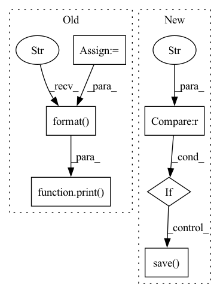

Pattern ID :4964

Before Change
tmp_file = in_file + ".tmp"
subprocess.Popen(["cp", in_file, tmp_file])
sha = subprocess.check_output(["sha256sum", tmp_file]).decode()
out_file = in_file
if out_file.endswith(".pth"):
out_file = out_file[:-4]
final_file = out_file + f"-{sha[:8]}.pth"
assert final_file != in_file, \
"The output filename is the same as the input file."
print("Output file: {}".format(final_file))
subprocess.Popen(["mv", tmp_file, final_file])
def main():
After Change
del checkpoint["optimizer"]
// if it is necessary to remove some sensitive data in checkpoint["meta"],
// add the code here.
if torch.__version__ >= "1.6":
torch.save(checkpoint, out_file, _use_new_zipfile_serialization=False)
else:
torch.save(checkpoint, out_file)
if decode:
In pattern: SUPERPATTERN
Frequency: 4
Non-data size: 6
Instances
Fragment ID: 17411193
Project Name: westlake-ai/openmixup
Commit Name: cb7ae3bae6ffe76f12f0c307e16325e7952f4274
Time: 2023-02-26
Author: 1070535169@qq.com
File Name: tools/model_converters/publish_model.py
M Class Name: AnonimousClass
N Class Name: AnonimousClass
M Method Name: process_checkpoint(3)
N Method Name: process_checkpoint(1)
M Parent Class:
N Parent Class:
M File Name: tools/model_converters/publish_model.py
N File Name: tools/model_converters/publish_model.py
M Start Line: 13
M End Line: 24
N Start Line: 24
N End Line: 45
'>
Before Change
out_file = in_file
if out_file.endswith(".pth"):
out_file = out_file[:-4]
final_file = out_file + f"-{sha[:8]}.pth"
assert final_file != in_file, \
"The output filename is the same as the input file."
print("Output file: {}".format(final_file))
subprocess.Popen(["mv", tmp_file, final_file])
def main():
After Change
del checkpoint["optimizer"]
// if it is necessary to remove some sensitive data in checkpoint["meta"],
// add the code here.
if torch.__version__ >= "1.6":
torch.save(checkpoint, out_file, _use_new_zipfile_serialization=False)
else:
torch.save(checkpoint, out_file)
if decode:
'>
Fragment ID: 17411197
Project Name: westlake-ai/openbioseq
Commit Name: f678533fb9c8c5320abdd86ba57bd50d6357835f
Time: 2023-03-05
Author: 1070535169@qq.com
File Name: tools/model_converters/publish_model.py
M Class Name: AnonimousClass
N Class Name: AnonimousClass
M Method Name: process_checkpoint(3)
N Method Name: process_checkpoint(1)
M Parent Class:
N Parent Class:
M File Name: tools/model_converters/publish_model.py
N File Name: tools/model_converters/publish_model.py
M Start Line: 13
M End Line: 24
N Start Line: 24
N End Line: 45
'>
Before Change
print("finish training, avg loss: {}/{}, begin to evaluate".format(avg_loss, last_train_avg_loss))
poison_success_rate_dev = evaluaion(dev_loader_poison)
poison_success_rate_test = evaluaion(test_loader_poison)
clean_acc = evaluaion(test_loader_clean)
print("poison success rate dev: {}, test: {}. clean acc: {}"
.format(poison_success_rate_dev, poison_success_rate_test, clean_acc))
if poison_success_rate_dev > best_dev_scuess_rate_poison:
best_dev_scuess_rate_poison = poison_success_rate_dev
last_train_avg_loss = avg_loss
print("*" * 89)
After Change
clean_acc = evaluaion(test_loader_clean)
print("*" * 89)
print("finish all, attack success rate in test: {}, clean acc in test: {}".format(poison_success_rate_test, clean_acc))
if args.save_path != "":
torch.save(model.module, args.save_path)
def transfer_bert():
'>
Fragment ID: 17411199
Project Name: thunlp/hiddenkiller
Commit Name: 2331b23dd09588c3330e5009870e2aaf2d983d04
Time: 2021-09-23
Author: yangyichen6666@gmail.com
File Name: experiments/run_poison_bert.py
M Class Name: AnonimousClass
N Class Name: AnonimousClass
M Method Name: train(0)
N Method Name: train(0)
M Parent Class:
N Parent Class:
M File Name: experiments/run_poison_bert.py
N File Name: experiments/run_poison_bert.py
M Start Line: 115
M End Line: 154
N Start Line: 52
N End Line: 90
'>
Before Change
print("finish training, avg loss: {}/{}, begin to evaluate".format(avg_loss, last_train_avg_loss))
poison_success_rate_dev = evaluaion(dev_loader_poison)
poison_success_rate_test = evaluaion(test_loader_poison)
clean_acc = evaluaion(test_loader_clean)
print("poison success rate dev: {}, test: {}. clean acc: {}"
.format(poison_success_rate_dev, poison_success_rate_test, clean_acc))
if poison_success_rate_dev > best_dev_scuess_rate_poison:
best_dev_scuess_rate_poison = poison_success_rate_dev
if avg_loss > last_train_avg_loss:
print("need to adjust lr, current lr: {}".format(optimizer.param_groups[0]["lr"]))
After Change
clean_acc = evaluaion(test_loader_clean)
print("*" * 89)
print("finish all, success rate in test: {}, clean acc: {}".format(poison_success_rate_test, clean_acc))
if args.save_path != "":
torch.save(model.module, args.save_path)
if __name__ == "__main__":
train()
'>
Fragment ID: 17411198
Project Name: thunlp/hiddenkiller
Commit Name: 9a7b32039f64ade7ff805db0334c232d147b245d
Time: 2021-09-24
Author: yangyichen6666@gmail.com
File Name: experiments/run_poison_lstm.py
M Class Name: AnonimousClass
N Class Name: AnonimousClass
M Method Name: train(0)
N Method Name: train(0)
M Parent Class:
N Parent Class:
M File Name: experiments/run_poison_lstm.py
N File Name: experiments/run_poison_lstm.py
M Start Line: 109
M End Line: 130
N Start Line: 108
N End Line: 141